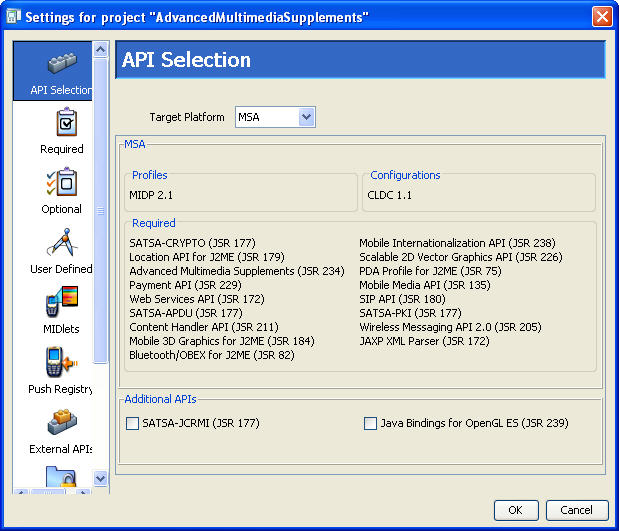
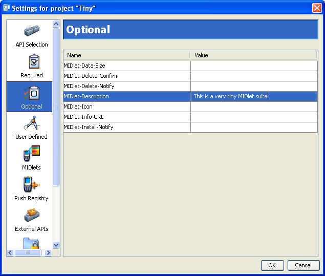
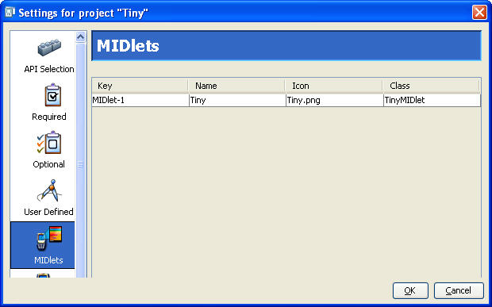
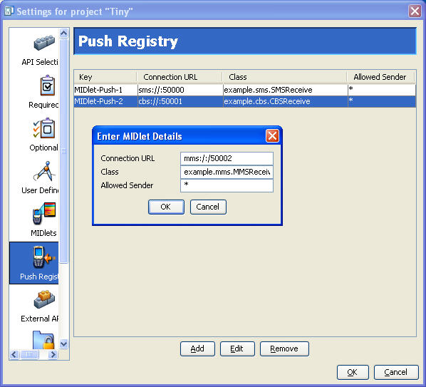
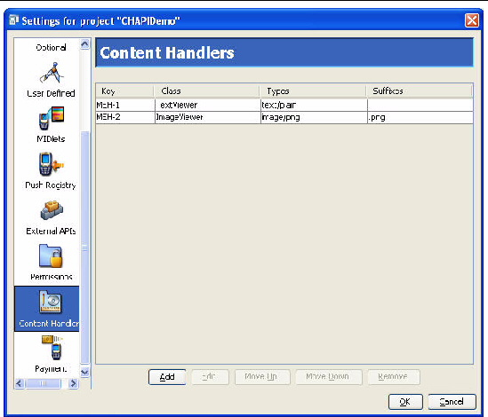
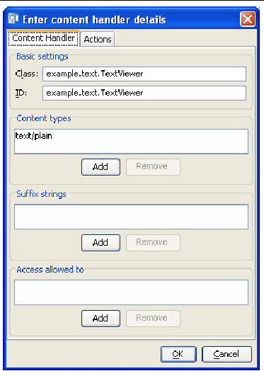
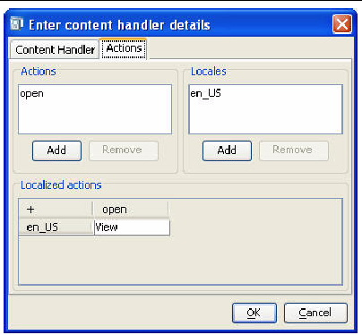
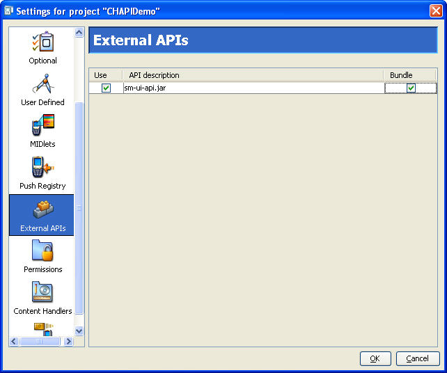

| Sun Java Wireless Toolkit for CLDC User's Guide |
| Sun Java Wireless Toolkit for CLDC User's Guide |
| C H A P T E R 3 |
|
Working With Projects |
In the last chapter, you learned how the Sun JavaTM Wireless Toolkit for CLDC helps you with the MIDP development cycle. This chapter delves more deeply into the details of working with projects, including the following:
Each project is built against some set of APIs. The Sun JavaTM Wireless Toolkit for CLDC supports many APIs. The full list is detailed in Section 1.6, Supported Technology. The toolkit enables you to develop applications for some subset of APIs based on the type of devices you expect to run your software.
For example, even though the toolkit supports JSR 184, the Mobile 3D Graphics API, you might want to develop applications that don't make use of that API. The project's API Selection settings make it possible to choose only the APIs you want to use.
To see how this works, launch the toolkit and open a project. Click Settings to bring up the window shown in FIGURE 3-1:
FIGURE 3-1 Project Settings Window

On the API Selection pane, the Target Platform setting controls the appearance of the rest of the pane. Choose the setting that best suits your need, and tweak your selection with the controls below. For example, if you're developing applications for devices that are compliant with the Java Technology for the Wireless Industry JSR, choose JTWI from the combo box. Then use the controls below to specify a version of CLDC and choose optional APIs.
The toolkit applies your selections when you compile your source code.
The project settings window also allows you to control the MIDlet suite attributes, which are stored in the descriptor as well as the manifest file of the MIDlet suite JAR file.
To see the attributes, open a project, then click the Settings button. The icon bar on the left of the settings window has three icons for attributes: Required, Optional, and User Defined.
Consult the MIDP 2.0 specification, final release 2 (referred to as MIDP 2.1) for the definitions of the required and optional attributes. The Sun JavaTM Wireless Toolkit for CLDC takes care of most of the details. In the early stages of development, you might not have to worry about the attributes at all. Once your application is stable and you're starting to think about deploying on real devices and going to market, adjust the values.
To adjust a value on the Required or Optional panes, click in the cell next to the attribute key you wish to change. Type in the new value.
FIGURE 3-2 Editing MIDlet Suite Attributes

To create new user-defined attributes, click the User Defined icon. Click the Add button and fill in the property name and value, then click OK.
To edit the user-defined property value, click the value column next to the key, just as you would with required or optional attributes.
To remove an attribute, select an attribute and click Remove.
The project settings also provide a way to add or modify the MIDlets that are contained in the current MIDlet suite project. To see how this works, start the toolkit and open an existing project. Click Settings and choose the MIDlets icon. You will see a list of all MIDlets in the project. If you just created a new project, the toolkit automatically fills in the first MIDlet entry.
FIGURE 3-3 List of MIDlets in a Project

To add a new MIDlet, click Add. Fill in the name, icon file name, and class name. You can leave the icon file name blank if you wish. To change values or remove MIDlet entries, use the Edit and Remove buttons.
The MIDlet names are presented to the user in the order shown when the MIDlet suite is launched. You can modify the order by selecting a MIDlet and clicking Move Up or Move Down.
You can also use project settings to work with a MIDlet suite's push registry settings. Click on Settings... and choose the Push Registry icon.
FIGURE 3-4 Project Push Registry Settings

To add an entry to the push registry, press Add and fill in values for the connection URL, MIDlet class, and allowed sender, then click OK. To edit an entry, select the entry and press the Edit button. To remove a push registry entry, select it and click Remove.
If you do make push registry entries for your application, make sure you also enter the appropriate permissions. See Chapter 6 for details.
The Sun JavaTM Wireless Toolkit for CLDC supports the Content Handler API (CHAPI), which is defined by JSR 211. The basic concept of CHAPI is that MIDlets can be launched in response to incoming content (files). Modern mobile phones can receive content using SMS, infrared, Bluetooth, e-mail, and other methods. Most content has an associated content type. CHAPI specifies a system by which MIDlets can be launched in response to specific types of content.
To modify the content handler settings in your project, click on Settings and choose the Content Handlers pane.
FIGURE 3-5 Configuring Content Handlers

Each line in the list represents the settings for a content handler. In this example, two content handlers have been configured, one for TextViewer and one for ImageViewer. To create a new content handler, press Add, or to edit an existing content handler, press Edit. You can adjust the order of the content handlers by selecting one and using the Move Up and Move Down buttons. To remove a content handler from the list, press Remove.
When you add or edit a content handler, the details window appears:
FIGURE 3-6 Content Handler Details

In the Class field, fill in the name of a MIDlet. ID is an identification string that can be used to invoke a content handler and control access.
Content types is a list of content types for which this content handler is responsible. Use Add and Remove to manage the list. Suffix strings is a list of URL suffixes that are often a substitute for an explicit content type. Finally, Access allowed to is a list of content handler IDs that indicates which other content handlers have access to this content handler. If the list is empty, access to this content handler is granted to every other content handler.
Content handlers have associated actions, which give invoking applications a choice about how to handle content. An image viewer content handler, for example, might include an action for viewing the image at its original size and another action that makes the image fill the available screen space. Click the Actions tab of the content handler details window to edit the actions for a content handler.
FIGURE 3-7 Content Handler Actions

The Actions list contains the internal names of the actions for this content handler. Locales is a list of all the locales for which human-readable action names will be provided. Localized actions is a grid which contains the human-readable action names for various locales. Each locale is represented by a row, while the actions are listed as columns. You can see all the human-readable action names for a particular locale by reading across a single row.
Projects have a standard directory structure. The project itself is represented by a directory in the apps subdirectory. For example, on Windows the demos project resides in workdir\apps\demos. The following table describes the project directory structure.
In addition, the project directory contains a project.properties file that contains information about the project.
To remove temporary directories and files from the project, choose Project > Clean.
The Sun JavaTM Wireless Toolkit for CLDC enables you to incorporate third-party libraries in your applications. Using third-party libraries can reduce your development time by providing functionality you don't wish to build yourself, but keep a close eye on the size of your MIDlet suite JAR file.
When you use a third-party library in your application, your JAR expands by the size of the third-party library. You can use an obfuscator to reduce the code size, and a good obfuscator even eliminates whatever parts of the library you are not using. Even with the use of an obfuscator, a third-party library is probably still larger than your own custom code, carefully written from scratch. You have to evaluate the trade-off between reducing your development time and the size of your MIDlet suite JAR file.
The Sun JavaTM Wireless Toolkit for CLDC supplies two methods for incorporating third-party libraries. The External APIs pane in the project settings makes it easy to include or exclude libraries in a project. In addition, you can place libraries in specific locations to make them available to one or all projects.
To specify which APIs should be included, click Settings and click the External APIs icon. A list of available external APIs appears (the list might be empty).
To add the API to the classpath at build time, check the box in the Use column (see FIGURE 3-8). If you want the API bundled into your application, also check the Bundle box. If you know you will deploy your application on devices where your selected external APIs are not present, you need to bundle those APIs in your application.
FIGURE 3-8 Choosing External APIs

Any library files placed in your project's lib directory are included in the building and packaging of your project. Libraries should be JAR or Zip files of Java technology classes.
So, if you installed on Windows and your application is called Tiny, the class library goes in workdir\apps\Tiny\lib. When you build, run, debug, and package your project, the class files in the lib directory are used.
Some devices have libraries available to all installed MIDlet suites. A manufacturer, for example, can make additional APIs available on all their devices. In this case, you want to be able to use these libraries when you build and test your application. You don't want the libraries to be included in your packaged MIDlet suite because you are installing the MIDlet suite on devices where the library is already present.
You can accomplish this by placing libraries in the workdir\apps\lib directory. Libraries in this directory are available for all projects.
The toolkit includes some advanced configuration options. You can use these options by editing a copy of the ktools.properties file, which is found in the following location:
Copy ktools.properties to workdir/os/wtklib and make changes as described in the remainder of this section.
The effect of changes to ktools.properies is visible the next time the toolkit is started.
You can change the font that's used in the console (and other text areas) by editing two properties. Here is one example that changes the font to Times New Roman 20 point:
font.JTextArea=Times New Roman font.size.JTextArea=20
To restore the default font and size, remove both properties.
By default, the Sun JavaTM Wireless Toolkit for CLDC stores applications in your working directory's apps subdirectory. You can change this by adding a line to ktools.properties of the following form:
kvem.apps.dir: application-directory
For Windows, any backslash (\) characters in the directory's path must be preceded by another backslash. Also, the directory's path cannot contain any spaces.
For example, to set the application directory to D:\dev\midlets, use:
kvem.apps.dir: D:\\dev\\midlets
Linux paths can be specified as usual.
By default, the javac uses the encoding set in the Java SE platform that you are running. For information on how to override the default source file encoding, see Appendix C.
Using the filterRevisionControl property, you can configure the toolkit to recognize and ignore auxiliary files created by the SCCS, RCS and CVS revision control systems.
To recognize and ignore auxiliary files, include the following line in ktools.properties:
kvem.filterRevisionControl: true
This prevents the toolkit from treating revision control files as source and resource files. For example, the toolkit treats a file named src\SCCS\s.MyClass.java as being an SCCS revision control file and not a Java technology source file.
| Sun Java Wireless Toolkit for CLDC User's Guide |
Copyright © 2007, Sun Microsystems, Inc. All Rights Reserved.